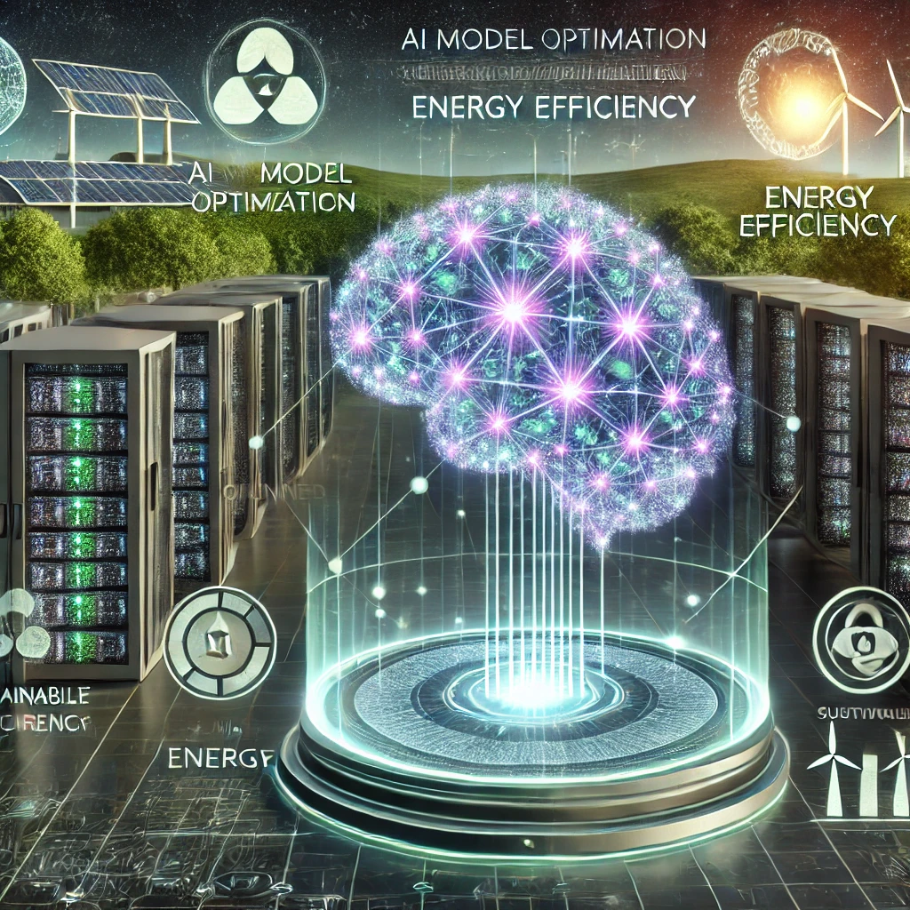

Presentación del Grupo
Megamentes es un grupo formado por cinco estudiantes comprometidos con la tecnología responsable: Yeray, Cosme, José María, Djaafer y Pau.
Estamos convencidos de que es posible desarrollar inteligencia artificial de forma sostenible, uniendo innovación y conciencia ecológica.
Contacto:
Correo: contacto@megamentes.tech
Teléfono: +34 912 345 678
Instagram: @megamentes_ia
Necesidad (Pertinencia)
¿Qué problema cubre nuestra propuesta?
Abordamos el alto impacto medioambiental del uso intensivo de la inteligencia artificial, centrado en el elevado consumo energético y la huella de carbono.
¿A quién va destinada?
Empresas tecnológicas, centros de datos, investigadores y desarrolladores de IA comprometidos con la sostenibilidad.
Importancia para el destinatario
La eficiencia energética es clave frente a la presión regulatoria, social y económica que enfrentan los usuarios de IA.

Aproximación a la Solución (Sostenibilidad)
Nuestra solución
Aplicamos técnicas como poda de redes neuronales, cuantización y aprendizaje federado, promoviendo energías renovables en centros de datos.
¿Cómo resolvemos el problema?
Reducimos el consumo energético sin afectar el rendimiento, mediante optimización algorítmica, hardware eficiente y estrategias energéticamente sostenibles.
¿Cómo lo ofrecemos?
Con herramientas de software, consultoría y certificaciones que avalan la sostenibilidad de los sistemas de IA.
Sostenibilidad del proyecto
Integramos software, infraestructura eficiente y prácticas responsables con métricas transparentes sobre el impacto ambiental.
Beneficios (Originalidad)
¿Qué aportamos?
- Reducción del consumo energético y huella de carbono.
- Disminución de costos operativos.
- Mantener el rendimiento de los modelos.
- Cumplimiento con normativas ambientales emergentes.
¿Cómo funciona?
- Optimización algorítmica: Poda, cuantización y aprendizaje federado.
- Infraestructura eficiente: Hardware especializado y uso de energías renovables.
- Herramientas de monitoreo: Plataforma para evaluar y mejorar el impacto en tiempo real.
Mejoras frente al modelo actual
- Modelos más ligeros y eficientes.
- Uso de energías renovables.
- Reducción del desperdicio computacional sin comprometer precisión.